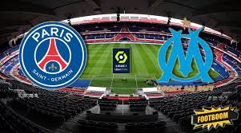

Новини футболу

Французьке дербі вийшо надзвичайно гарячим. 5 вилучень та бійка
читати більше...
|
Футбол
Футбол — це командний вид спорту, який грається між двома командами по одинадцять гравців зі сферичним м'ячем.
Близько 250 мільйонів чоловіків і жінок із більш ніж 200 країн грають у футбол, що робить його найпопулярнішим у світі видом спорту.
У футбол грають на прямокутному полі з воротами на кожному кінці. Мета гри полягає в тому, щоб забити м'яч у ворота протилежної команди.
Гравцям не дозволено торкатися м'яча руками, поки він перебуває в грі, якщо вони не воротарі (і тільки тоді, коли він перебуває в їхньому штрафному майданчику),
або під час укидання м'яча.
Інші гравці здебільшого використовують свої ноги, щоб завдати вдару або передати м'яч, але можуть також використовувати голову і тулуб.
Команда, яка забиває більше голів до кінця матчу — виграє його. Якщо жодна команда не забила м'яч, або рахунок однаковий, то оголошується нічия.
|
Menu
|